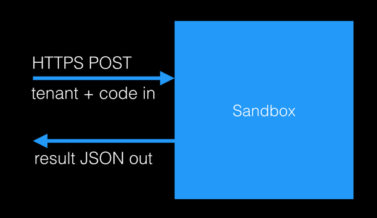

AuthØ
sandbox-as-a-service
BVP | December 2014
AuthØ use case
running authorization rules and accessing custom databases
in a multi-tenant system

requires a sandbox
sandbox provides
data isolation
memory
network
and cpu usage
guarantees
sandbox model
programming 101
JavaScript function closure
return function (cb) {
cb(null, { hello: 'world' });
}
(This is Node.js)
Beyond AuthØ
for operators of multi-tenant systems
who require extensibility through code
AuthØ sandbox provides a lightweight and authenticated backend-as-a-service
synergy with AuthØ identity services

AuthØ sandbox-as-a-service value prop
authenticated and isolated execution
of infrequent RPC logic based on HTTP
that requires zero-provisioning
and is available globally with low latency
Potential use cases
backend extensibility in multi-tenant platforms (AuthØ, MindJet)
single page applications with lightweight backend needs (PwC)
web hook implemenentations (GitHub, Google Analytics)
flexible, global health monitoring (AuthØ, Pingdom)
flexible service integration (IFTTT)
Unlike AWS Lambda...
is authenticated out of the box
does not require provisioning
supports RPC model
uses HTTP for ubuquitus access
supports dedicated and on-premise installations
Unlike Heroku or WAWS...
is authenticated out of the box
does not require provisioning
has lower cost per tenant
supports dedicated and on-premise installations